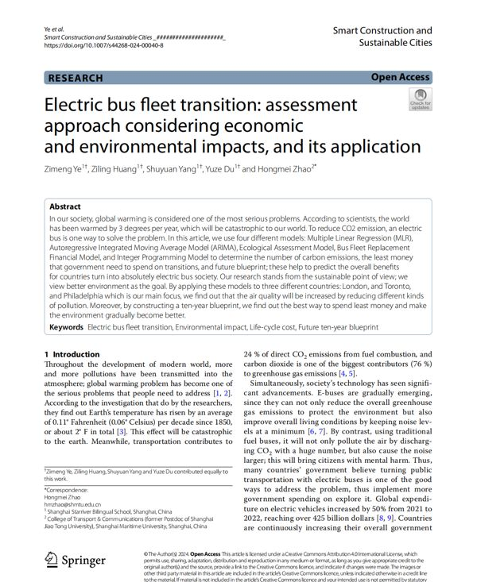

Research
What I'm researching
Current Research
AI persona evaluation and interpretability · Atypica.AI, Tezign
- Asked whether LLM-generated consumer personas actually predict how real people decide. Built a leakage-controlled protocol and tested it on 1,153 respondents.
- Found that persona scores correlated only weakly with held-out behavior, then used embeddings and clustering on 182 personas to compare their diversity with real people.
- Reproduced Anthropic's J-space method on an open-source 8B model and built a layer-wise probing harness to look for where things go wrong inside the model.
Nutrition data engineering · UC Berkeley
- Collecting UPC-level nutrition data for 50K+ food products for an applied economics research project, combining USDA, Open Food Facts, and embedding-based name matching.
- Reading nutrition labels from product photos with the OpenAI API and training a match-scoring model on reviewer decisions.
Digital credit policy research · Rausser College of Natural Resources
- Designed the preliminary data strategy for a study of digital credit policy in Ghana, defining borrower-level variables, repayment measures, and risk characteristics.
Publication

Electric bus fleet transition: assessment approach considering economic and environmental impacts, and its application
Used regression, ARIMA, a life-cycle cost model, and integer programming to plan a ten-year switch to electric buses for Philadelphia, London, and Toronto, comparing emissions and spending.